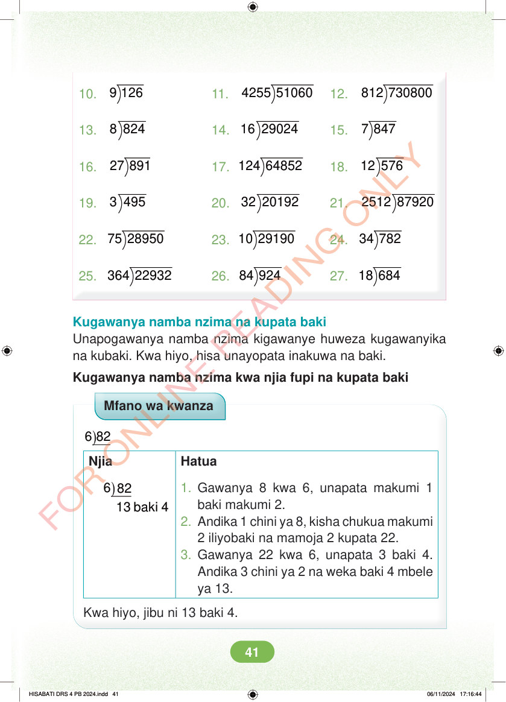

10. 9 126 11. 4255 51060 12. 812 730800 13. 8 824 14. 16 29024 15. 7 847 16. 27 891 17. 124 64852 18. 12 576 19. 3 495 20. 32 20192 21. 2512 87920 22. 75 28950 23. 10 29190 24. 34 782 25. 364 22932 26. 84 924 27. 18 684 Kugawanya namba nzima na kupata baki Unapogawanya namba nzima kigawanye huweza kugawanyika na kubaki. Kwa hiyo, hisa unayopata inakuwa na baki. Kugawanya namba nzima kwa njia fupi na kupata baki Mfano wa kwanza ) 6 82 Njia Hatua ) 6 82 13 baki 4 1. Gawanya 8 kwa 6, unapata makumi 1 baki makumi 2. 2. Andika 1 chini ya 8, kisha chukua makumi 2 iliyobaki na mamoja 2 kupata 22. 3. Gawanya 22 kwa 6, unapata 3 baki 4. Andika 3 chini ya 2 na weka baki 4 mbele ya 13. Kwa hiyo, jibu ni 13 baki 4. HISABATI DRS 4 PB 2024.indd 41 HISABATI DRS 4 PB 2024.indd 41 06/11/2024 17:16:44 06/11/2024 17:16:44